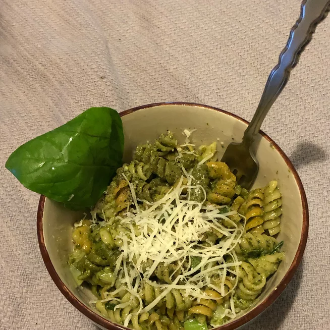

Pasta Pesto

Description
A simple but rich dish full of flavour
Ingredients
- Penne 200g
- Green pesto 100g
- Peanuts 50g
Steps
- Bring water to boil in a non-stick saucepan
- Add the pasta and a tsp of salt.
- Once the pasta is cooked to taste, strain and return to the pot.
- On a very low heat stir in the pesto and the peanuts
- Once the temperature is adequate, serve.